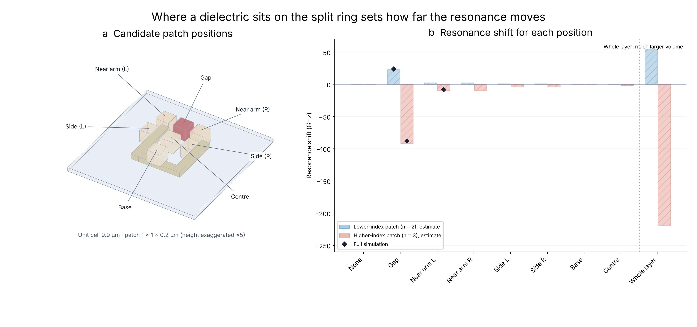
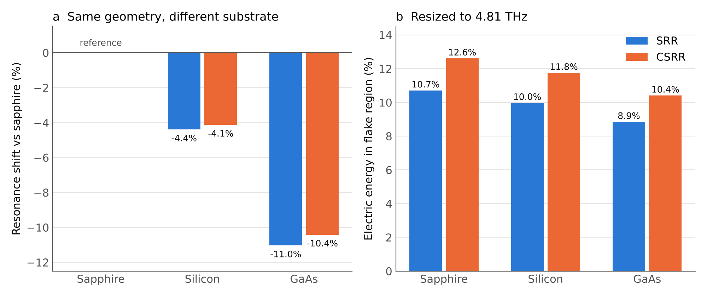

Terahertz resonators for coupling to the NbOCl₂ ferron
Po-Chang Chen · UCLA · November 2026
We design gold resonators that trap terahertz light at 4.8 THz, the frequency of the ferron (a collective lattice vibration) in the crystal NbOCl₂. The more of the resonator's field that reaches the crystal, the more strongly light and crystal interact, which is what lets us study the effect of vacuum fluctuations on this material.
Outcome
Two designs on target. A split ring (SRR) and its slot-ring counterpart (CSRR) are both simulated to resonate at the 4.8 THz target.
The crystal belongs in the gap (Fig. 1). The resonator's electric field is concentrated in the gap of the ring. A small dielectric patch there shifts the resonance about ten times more than the same patch anywhere else on the split ring, so the NbOCl₂ flake should sit over the gap.
Sapphire is the best substrate (Fig. 2). Silicon or GaAs pull the resonance down by 4–11%. Even after resizing to 4.8 THz, they leave 7–17% less of the field in the crystal region. Of the alternatives, silicon is better than GaAs. The slot ring puts more of its field into the crystal than the split ring (12.6% vs 10.7% on sapphire).
Higher-accuracy simulations. The calculations now run on UCLA's Hoffman2 computing cluster, which allows the finer detail needed for precise results.

Figure 1. Where a dielectric sits on the split ring sets how far the resonance moves. Bars are estimates from the field without a patch; diamonds are full simulations, which confirm them. A higher-index patch in the gap moves the resonance by about 88 GHz; next to an arm, only about 8 GHz.

Figure 2. Substrate comparison. (a) A higher-index substrate pulls the resonance down. (b) After resizing each design back to 4.8 THz, sapphire keeps the largest share of the electric field in the crystal region.
Next steps
Add the NbOCl₂ flake and its ferron to the model and compute the vacuum-field strength and expected coupling for each design.
Select the final design and substrate, and provide fabrication dimensions.
Continue checking the simulations against published devices, and compare them with our own fabricated devices once measured.